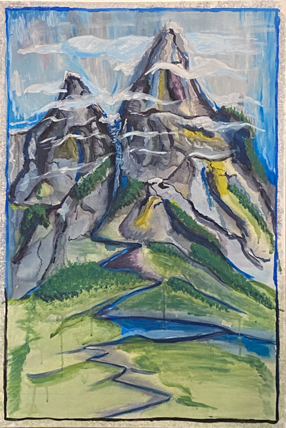
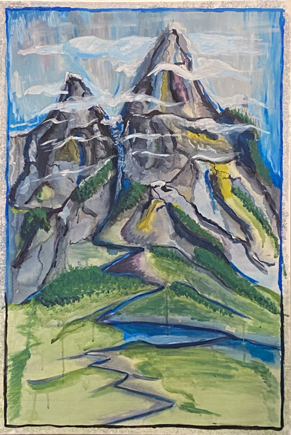

Profile
I am Jai Hebel, M.Eng Biological & Biomedical Engineering Artist. Engineer. Scientist. Learn More 

Mission
As a generalist I seek to pursue both domain-specific expertise and broad understanding in order to connect new ideas for deeper understanding.Featured Work
Machine Learning
Through my work as a biological imaging specialist, I've deployed a wide range of CNNs, VAEs, and other computer vision solutions for MR, microscopy, and hyperspectral image analysis.